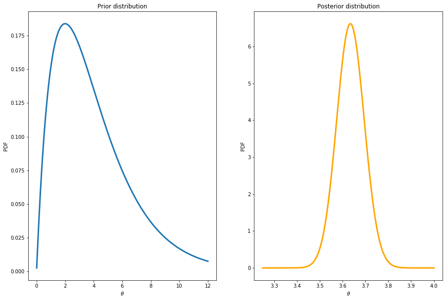
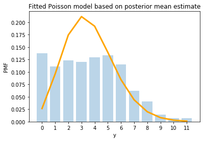
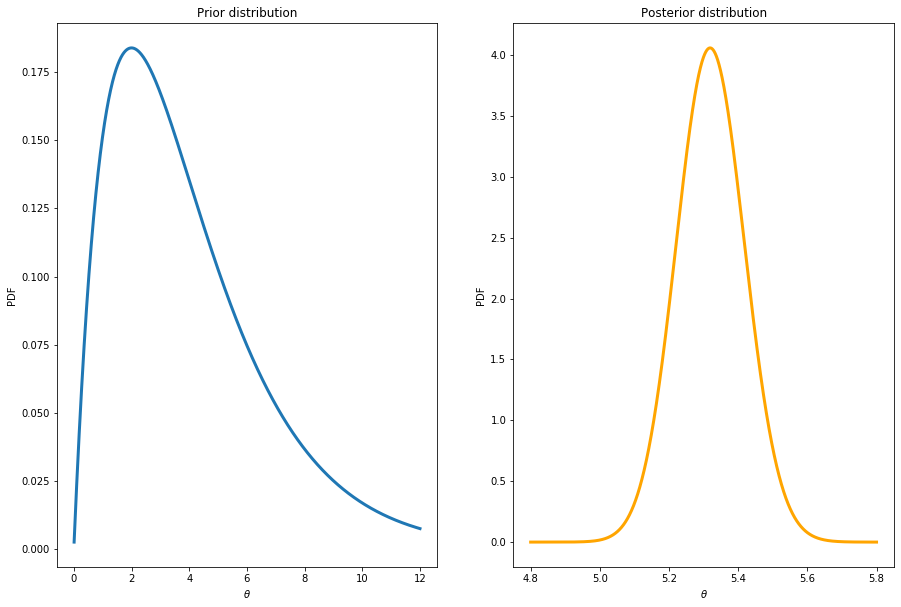
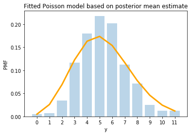
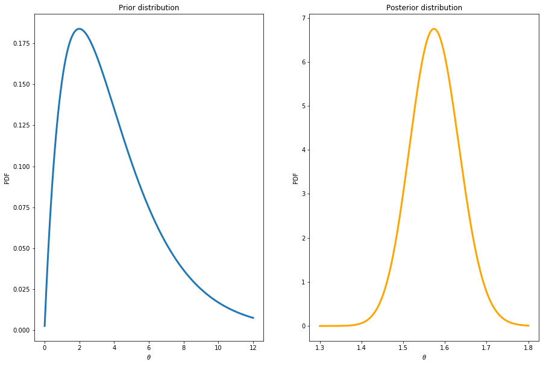
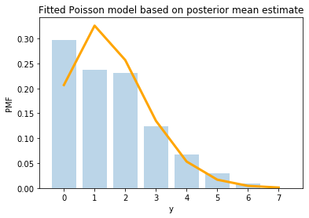
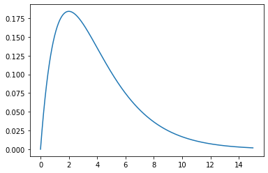

# Imports and load the data
import numpy as np
import scipy.stats as sps
import pandas as pd
import matplotlib.pyplot as plt
np.random.seed(seed=123) # Set the seed for reproducibility
# Load the data
eBayData = pd.read_csv('https://github.com/STIMALiU/ml4industry/raw/master/Labs/eBayData.csv', sep = ',')
nBids = eBayData['nBids']Bayesian analysis of the number of Bids in eBay coin auctions
Linköping University, Fall 2019.
Author: Mattias Villani, Linköping and Stockholm University, http://mattiasvillani.com
The dataset contains data from 1000 auctions of collector coins. The dataset was collected and first analyzed in
Wegmann and Villani. ‘Bayesian Inference in Structural Second-Price Common Value Auctions’, Journal of Business & Economic Statistics, 2011.
Import modules, load the data and explore the data by plotting
The model these data using a Poisson distribution: \[y_1,...,y_n \vert \theta \overset{iid}{\sim} \mathrm{Poisson}(\theta).\] Let’s use a conjugate Gamma prior, so the posterior is nice:
Prior: \(\theta \sim \mathrm{Gamma}(\alpha, \beta)\)
Posterior: \(\theta \vert y_1,\ldots,y_n \sim \mathrm{Gamma}(\alpha + \sum_{i=1}^n y_i, \beta + n)\)
# Define the Gamma distribution in the rate parametrization
def gammaPDF(x, alpha, beta):
return(sps.gamma.pdf(x, a = alpha, scale = 1/beta))
def PostPoisson(y, alphaPrior, betaPrior, thetaPriorGrid = None, thetaPostGrid = None):
# Compute Prior density and posterior
priorDens = gammaPDF(x = thetaPriorGrid, alpha = alphaPrior, beta = betaPrior)
n = len(y)
alphaPost = alphaPrior + np.sum(y)
betaPost = betaPrior + n
postDens = gammaPDF(x = thetaPostGrid, alpha = alphaPost, beta = betaPost)
print('Number of data points = ' + str(len(y)))
print('Sum of number of counts = ' + str(np.sum(y)))
print('Mean number of counts = ' + str(np.mean(y)))
print('Prior mean = ' + str(alphaPrior/betaPrior))
print('Prior standard deviation = '+ str(np.sqrt(alphaPrior/(betaPrior**2))))
print('Equal tail 95% prior interval: ' + str(sps.gamma.interval(0.95, a = alphaPrior, scale = 1/betaPrior)))
print('Posterior mean = ' + str(round(alphaPost/betaPost,3)))
print('Posterior standard deviation = '+ str(np.sqrt( (alphaPrior+np.sum(y))/ ((betaPrior+n)**2) ) ))
print('Equal tail 95% posterior interval: ' + str(sps.gamma.interval(0.95, a = alphaPost, scale = 1/betaPost)))
if (thetaPriorGrid.any() != None):
fig, ax = plt.subplots(1, 2, figsize=(15, 10))
h1, = ax[0].plot(thetaPriorGrid, priorDens, lw = 3);
ax[0].set_xlabel(r'$\theta$');ax[0].set_ylabel('PDF');
ax[0].set_title('Prior distribution');
h2, = ax[1].plot(thetaPostGrid, postDens, lw = 3, color ="orange");
ax[1].set_xlabel(r'$\theta$');ax[1].set_ylabel('PDF');
ax[1].set_title('Posterior distribution');
alphaPrior = 2
betaPrior = 1/2
PostPoisson(y = nBids, alphaPrior = 2, betaPrior = 1/2,
thetaPriorGrid = np.linspace(0.01,12,10000), thetaPostGrid = np.linspace(3.25,4,10000))
plt.savefig('../../Slides/Images/PoissonAnalysisAll.pdf')Number of data points = 1000
Sum of number of counts = 3635
Mean number of counts = 3.635
Prior mean = 4.0
Prior standard deviation = 2.8284271247461903
Equal tail 95% prior interval: (0.48441855708793014, 11.143286781877796)
Posterior mean = 3.635
Posterior standard deviation = 0.06027740643004339
Equal tail 95% posterior interval: (3.5179903738284697, 3.7542677655304297)
Let’s plot the data along with the fitted Poisson model. We’ll keep things simple and plot the fit for the posterior mean of \(\theta\).
def plotPoissonFit(y, alphaPrior, betaPrior):
# Plot data
maxY = np.max(y)
yGrid = np.arange(maxY)
probs = [np.sum(y==k)/len(y) for k in range(maxY)]
h1 = plt.bar(yGrid, probs, alpha = 0.3);
plt.xlabel('y');plt.ylabel('PMF');
plt.xticks(yGrid);
plt.title('Fitted Poisson model based on posterior mean estimate');
# Compute posterior mean
n = len(y)
alphaPost = alphaPrior + np.sum(y)
betaPost = betaPrior + n
postMean = alphaPost/betaPost
# Plot the fit based on the posterior mean of theta
poisFit = sps.poisson.pmf(yGrid, mu = postMean)
plt.plot(yGrid, poisFit, color = 'orange', lw = 3)# Plot the fit for all bids
alphaPrior = 2
betaPrior = 1/2
plotPoissonFit(y = nBids, alphaPrior = alphaPrior, betaPrior = betaPrior)
plt.savefig('../../Slides/Images/FitPoissonDataAll.pdf')
Wow, that’s are terrible fit! This data does not look at all like a Poisson distribution. We will later model the number of bids using a Poisson regression where we take into account several explanatory variables. But, for now, let’s split the auctions in two subsets:
i) auctions with low reservation price in relation to the item’s book value (MinBidShare<=0)
ii) auctions with high reservation price in relation to the item’s book value (MinBidShare>0)
# Auctions with low reservation prices:
nBidsLow = nBids[eBayData['MinBidShare']<=0]
PostPoisson(y = nBidsLow, alphaPrior = 2, betaPrior = 1/2,
thetaPriorGrid = np.linspace(0.01,12,10000), thetaPostGrid = np.linspace(4.8,5.8,10000))
plt.savefig('../../Slides/Images/PoissonAnalysisLow.pdf')Number of data points = 550
Sum of number of counts = 2927
Mean number of counts = 5.321818181818182
Prior mean = 4.0
Prior standard deviation = 2.8284271247461903
Equal tail 95% prior interval: (0.48441855708793014, 11.143286781877796)
Posterior mean = 5.321
Posterior standard deviation = 0.09831105633231468
Equal tail 95% posterior interval: (5.129657752003312, 5.5150184684772965)
# Plot the fit for low bids
plotPoissonFit(y = nBidsLow, alphaPrior = alphaPrior, betaPrior = betaPrior)
plt.savefig('../../Slides/Images/FitPoissonDataLow.pdf')
# Auctions with low reservation prices:
nBidsHigh = nBids[eBayData['MinBidShare']>0]
PostPoisson(y = nBidsHigh, alphaPrior = 2, betaPrior = 1/2,
thetaPriorGrid = np.linspace(0.01,12,10000), thetaPostGrid = np.linspace(1.3,1.8,10000))
plt.savefig('../../Slides/Images/PoissonAnalysisHigh.pdf')Number of data points = 450
Sum of number of counts = 708
Mean number of counts = 1.5733333333333333
Prior mean = 4.0
Prior standard deviation = 2.8284271247461903
Equal tail 95% prior interval: (0.48441855708793014, 11.143286781877796)
Posterior mean = 1.576
Posterior standard deviation = 0.05914722572463586
Equal tail 95% posterior interval: (1.4622167615099835, 1.6940409831159082)
# Plot the fit for high bids
plotPoissonFit(y = nBidsHigh, alphaPrior = alphaPrior, betaPrior = betaPrior)
plt.savefig('../../Slides/Images/FitPoissonDataHigh.pdf')
So, separating the bids into dataset with low and high reservation prices makes the Poisson model a lot better for the data. Later, we will use a Poisson regression with reservation price as one of the features, which an even more fine grained analysis.
This looks a lot better. The data for these two subpopulations look like something we can model with Poisson distributions. Let’s try that using a conjugate Gamma prior:
Prior: \(\theta \sim \mathrm{Gamma}(\alpha, \beta)\)
Posterior: \(\theta \vert y_1,\ldots,y_n \sim \mathrm{Gamma}(\alpha + \sum_{i=1}^n y_i, \beta + n)\)
Prior
We start with a Gamma prior with mean of 2 and rate parameter equal to 1/2, both for the low and high reservation price auctions. The prior looks like this:
# Define the Gamma distribution in the rate parametrization
def gammaPDF(x, alpha, beta):
return(sps.gamma.pdf(x, a = alpha, scale = 1/beta))
thetaGrid = np.linspace(0.001,15,1000)
alphaPrior = 2
betaPrior = 1/2
priorDens = gammaPDF(x = thetaGrid, alpha = alphaPrior, beta = betaPrior)
plt.plot(thetaGrid, priorDens);
n = len(nBids)
alphaPost = alphaPrior + np.sum(nBids)
betaPost = betaPrior + n
thetaGrid = np.linspace(0.000001,15,10000)
postDens = gammaPDF(x = thetaGrid, alpha = alphaPost, beta = betaPost)spacing = thetaGrid[1]-thetaGrid[0]
postDens = (postDens/np.sum(postDens))
idxDesc = (-postDens).argsort()
HPDregion = np.sort(thetaGrid[idxDesc[np.cumsum(postDens[idxDesc])<=0.95]])
(HPDregion.min(),HPDregion.max())(3.5178525506550655, 3.7518759373937396)